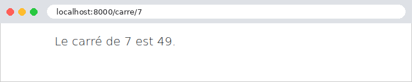
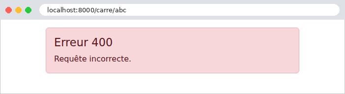

7. The Lifecycle of a Request
Between the arrival of a request and the dispatch of its response, [Django] goes through several steps, and the application can intervene at each one. We have already encountered several of these intervention points: the middleware components and their method [__call__] (examples 03, 12, 16, 23), their [process_exception] methods (examples 08 and 12) and [process_view] methods (example 21), and route converters (example 12). This chapter combines them into a single example, which displays a message in the console at each step so that the order can be observed:
-
- the [request_started] signal: the request has just arrived. A signal is a notification, emitted by [Django] at a specific moment, that application functions—the receivers—can receive. They cannot act on the request: they are simply notified;
-
- The [__call__] method of the middleware components, before the call to [get_response]: the middleware components are processed in the order specified by the [MIDDLEWARE] configuration. Routing has not yet taken place: a middleware component does not yet know which view will handle the request. It may also respond on its own, without invoking the rest of the chain: in that case, neither the subsequent middleware components nor the view are called;
-
- Routing: Once all middleware components have been processed, [Django] searches for the route that matches the requested path (example 02); the route parameter converters (example 12) are called at this point. If no route matches, a [Http404] (404) exception is thrown;
- 3 and 4. The [process_view] method of the middleware components, in the order specified: the view has been selected but not yet called. A middleware component then knows the view and its parameters; it can let the process continue (return [None]), respond on behalf of the view, or throw an exception;
-
- the view, and the template it generates;
- x. The [process_exception] middleware method, if the view has thrown an exception, in the reverse order of the configuration. The first one to provide a response stops the search. If none provides one, [Django] generates the error response itself: its detailed page in debug mode, or the application’s error page, provided by the views [handler400], [handler403], [handler404], and [handler500] (see below). An exception thrown elsewhere (in the [__call__] or [process_view] of a middleware component, or in routing) does not pass through [process_exception]: [Django] converts it into an error response upon exiting the relevant middleware;
- 6 and 7. The [__call__] method of the middleware components, following the call to [get_response], in the reverse order of the configuration: the response is ready, and each middleware component can modify it (add a header, a cookie);
-
- The [request_finished] signal, sent after the response is sent to the browser. Receivers can no longer modify the response: they are used for processing tasks that can wait (such as closing database connections, which is what [Django] itself does), without making the user wait.
This is equivalent to the filters of [Java] and the interceptors of [Spring MVC], the action filters of [ASP.NET Core MVC], and the functions [before_request] / [after_request] and [Flask] functions, the middleware in [Laravel], and the event listeners in [Symfony]. Compared to these, the difference lies in the structure: a middleware component encapsulates the rest of the processing (it calls [get_response], and thus sees the request before and the response after, within the same code, like the Russian nesting dolls in Example 03), whereas an event listener reacts to an event, and you must listen for two events—one before and one after the action—to take action. The order of the middleware components, meanwhile, follows the list in the [MIDDLEWARE] configuration, rather than a numerical sequence: this is easier to read, but you must be familiar with the ordering constraints for the middleware components in [Django] (the session before authentication, for example; as specified in the [Django] documentation).
7.1. Example 24: The steps in processing a request
The application has only one view, which calculates the square of an integer: [/carre/7]. Depending on URL, it either succeeds or fails in various ways. The messages are written to the server console by a small function:
By default, [print] writes to standard output; the [file=sys.stderr] parameter sends it to the error output, whereas [Django] writes its own messages: both will thus be displayed in the order in which they are generated. (A real application would use the [logging] module of [Python], which [Django] configures via its [LOGGING] setting: the case study does this.)
7.1.1. The configuration: config/settings.py
- line 9: [ALLOWED_HOSTS] is populated so that the example can be deployed to production ([DEBUG = False]) and the application’s error pages can be viewed (see below);
- lines 23–28: four middleware components, in the order in which the request passes through them.
7.1.2. Before and after everything else: the signals
- line 3: the two signals from [Django] that frame each request;
- lines 12–15: the [@receiver] decorator hooks the [debut] function onto the [request_started] signal: it will be called every time the signal is emitted. A receiver receives the signal emitter ([sender]), followed by named parameters specific to each signal; [**kwargs] collects those it does not name, as required by the documentation for [Django] (a signal may receive new parameters in a future version). [request_started] provides [environ], the WSGI dictionary for the query (example 01): the [HttpRequest] object does not yet exist. The receiver displays the method and the path, followed by message #0;
- lines 20–25: message No. 8, when everything is finished, with the duration measured by the timer (see below), if the measurement has started.
[Django] sends other signals: before and after saving a template from ORM ([pre_save], [post_save]), when a user logs in ([user_logged_in])... and the application can define its own. A receiver must be registered when the application starts, before the first request. The designated location for this is the application configuration:
- lines 6–7: An application’s configuration is a class that inherits from [AppConfig], conventionally located in the application’s [apps.py] module, and which [Django] locates on its own. [name] is the name of the application package. This is also where you would give the application a human-readable name ([verbose_name]);
- lines 11–12: [Django] calls the method [ready] once, at startup, when all applications are loaded. Importing the [signaux] module there is sufficient: its [@receiver] decorators attach the receivers when they execute. The import is done within the method, rather than at the top of the file, because a module that uses the ORM templates cannot be imported until the applications have been loaded. The comment [# noqa: F401] instructs code-checking tools not to flag an “unused” import.
7.1.3. Before and After the View: The Journal Middleware
- Lines 14–22: the first middleware in the configuration: it processes the request before all others (message #1) and the response after all others (message #7), along with its code ([status_code]). It does not know the route, since routing has not yet taken place. It is used for processing that applies to all requests: logging, handling a proxy (the case study mentions this in relation to the clients’ address IP)...
7.1.4. Routing: calculation/convertisseurs.py
A route converter (example 12), which writes message No. 2. It accepts any segment (the expression [[^/]+]: one or more characters that are not slashes) and converts it to a whole number, or to [None] if it is not one: unlike the [int] converter (example 02), which would return a 404 page for [/carre/abc]; here, the view will determine the outcome. The file [config/urls.py] saves it as [entier]:
- Lines 18–21: the error page views, described later.
7.1.5. After routing: the "Block" middleware
Let’s return to the [calcul/middleware.py] file:
- Lines 26–39: The second middleware only acts within its method
***[process\_view], after routing. [request.resolver_match] describes the result of the routing (Example 16): the route name ([url_name]***), the view, and its parameters. Message No. 3; - Lines 36–38: The parameter [?bloquer] of URL causes a 403 error (Forbidden, access denied): The exception [PermissionDenied] interrupts processing; the subsequent [process_view]s and the view are not called.
7.1.6. Before the view: the Chrono middleware and the @chronometre decorator
We want to time only certain views—those that request it. All we need to do is mark them with a decorator of our own design:
- lines 27–29: a decorator that does not replace the view; it adds an attribute, [chronometre], and returns it. In [Python], a function is an object to which attributes can be added. This is how [Django] itself marks certain views: [@csrf_exempt] (Example 18) adds the attribute [csrf_exempt], which [CsrfViewMiddleware] reads in its method [process_view];
- Line 8: The timestamp must be passed from [process_view] to the signal [request_finished]. However, the server processes multiple requests simultaneously: a regular module variable would be shared by all of them. A [threading.local] object has attributes specific to each thread: each request, processed in its own thread, has its own start time;
- lines 11–22: starting and stopping the timer. [time.perf_counter_ns()] is a precise clock, in nanoseconds, designed to measure durations. [getattr(objet, nom, défaut)] returns an object’s attribute, or the default value if it does not exist: the timer may not have started in this thread. The duration is returned in milliseconds.
The middleware that reads the mark, in the file [calcul/middleware.py]:
- lines 55–61: in [process_view], if the view contains the mark, message #4 is sent, and the timer starts. The mark is also stored in the request for later use. The decorator [@require_GET], applied on top of [@chronometre] (file [calcul/views.py]), does not clear the mark: [functools.wraps] (example 08) copies the attributes of the function it wraps;
- lines 49–53: in [__call__], after the view, message #6, with the response code, if the view was timed.
7.1.7. The view: calculation/views.py
- line 15: the view is marked with our decorator [@chronometre];
- line 16: the parameter [n] is provided by our converter;
- lines 18–19: a parameter that is not an integer: error 400 (Bad Request), caused by the exception [BadRequest] (example 07);
- lines 20–21: the number 13 causes an “unexpected” error, a [ErreurDomaine] exception from the application;
- line 22: the normal case. The [calcul/resultat.html] template simply displays the result.
7.1.8. Error handling: the PageErreur middleware and error views
The last middleware in the [calcul/middleware.py] file replaces the error pages from [Django] with our own, for exceptions that escape the view:
- line 67: a dictionary whose keys are exception classes and whose values are the corresponding HTTP codes;
- lines 76–79: [isinstance] (example 03) checks whether the exception is of one of these classes (or a child class). If so, display message No. x, along with the code, and [break] terminates the loop;
- Lines 80–85: The [else] of a [for] loop is executed if the loop has completed without a [break]: none of the three classes is suitable. A [ErreurDomaine] exception is an “unexpected” error, converted into a “custom” error page with status code 500 (Internal Server Error). The exception message is displayed in the console but not on the page: it may contain internal details that are not relevant to the user. Other exceptions are handled by [Django] ([return None]);
- line 88: the response, which replaces the exception. It then passes through the preceding middleware components ([Chrono], then [Journal]), just like a regular response.
This middleware only handles exceptions thrown by the view. For other cases (the [PermissionDenied] exception from the [Bloquer] middleware, the 404 error from a URL middleware with no route), [Django] uses the application’s error views, declared in the [config/urls.py] file by the variables [handler400], [handler403], [handler404], and [handler500] (lines 18–21), and written to the file [calcul/erreurs.py]:
- lines 9–10: the application exception: a class that inherits from [Exception], without adding anything to it ([pass] is the statement that does nothing: a block cannot be empty);
- lines 15–29: The error views receive the request and the exception (except for view 500, which receives only the request);
- lines 32–34: the same error page for all of them, with the error code (message #x).
There is one subtlety: in debug mode, [Django] retains its detailed pages for errors 400, 404, and 500, and uses these views only for error 403. This is intentional: during development, the detailed page is more useful. Outside of debug mode, all four views are used. Without these views, [Django] would use, outside of debug mode, its plain pages (example 03), or application templates named [400.html], [403.html], [404.html], and [500.html] if they exist: this is another, even simpler way to replace the error pages. The application’s error page:
- line 8: DTL does not have a dictionary defined in the template; the message is selected by a sequence of [{% elif %}].
7.1.9. Execution
The normal case, [/carre/7]:

The server console displays the steps, in order:
The line in square brackets is the development server log, written after the response is sent, just before the signal [request_finished]. A blocked access, [/carre/7?bloquer]:

The [Bloquer] middleware raised an exception in [process_view]: neither the [process_view] from [Chrono] nor the view were called. The exception did not pass through [process_exception] (it did not originate from the view): [Django] converted it into a response via the view [handler403], then wrote it to the log, along with its call stack (a [PermissionDenied] exception is a client error, which [Django] nevertheless logs in this way, at the “warning” level). The response passed through the second half of the [Journal] middleware. The [request_finished] signal was emitted but did not display anything, as the measurement had not started. A parameter that is not an integer, [/carre/abc]:

This time, the view was called—[None]—and it was the one that raised the 400 error; [process_exception] rendered it as a page. [Django] still logged the 400 response in its log ([Bad Request: /carre/abc]). An “unexpected” error, [/carre/13]:

The exception was handled by our middleware: the user sees the “custom” error page, not the detailed page, even though debug mode is enabled. Finally, a URL that does not correspond to any route, [/inconnu]:
Routing failed: no [process_view], no view. In debug mode, the 404 page is the detail page for [Django] (example 02). Let’s switch the example to production mode ([DEBUG = False] in the [config/settings.py] file); we must then start the server using [python manage.py runserver --insecure] so that it continues to serve the static files (example 15):
The 404 page is now our own, generated by the view [handler404] (the console displays [x. vue de la page d'erreur 404]).
Let’s summarize the key points. Middleware is the right place for checks common to many views (is the user logged in? Do they have permission to access this view?), and decorators are for those checks that apply to only a few views: authentication will rely on them, as we’ll see in the next chapter. [process_exception] and the error views ensure that the user never sees a technical page, regardless of the error: the case study takes advantage of this.